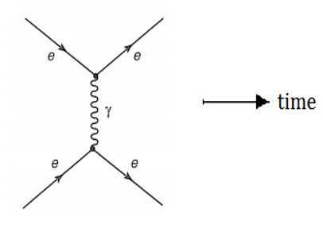
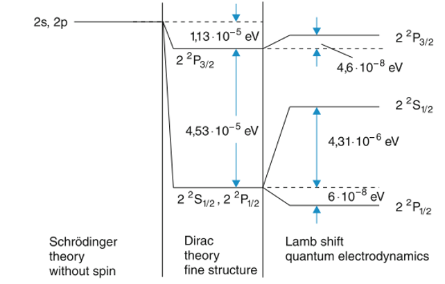

إن معادلات الكهروداينمك الكلاسيكي التي اكتملت على يد ماكسويل عام 1864 تُمثل خلاصة أعمال أمتدت لقرنين من الزمان بدأت من كولوم و كَاوس وأمبير وفارادي وغيرهم وخلاصتها إنه يوجد نوعين من الشحنات الكهربائية وتمثل مصدر للمجالات الكهربائية والمغناطيسية وإن المجال الكهربائي المتغير زمنياً يولد مجالاً مغناطيسياً متغيراً والعكس صحيح دون وجود لمصادر هذه المجالات كما إن التفاعل بين الشحنات الكهربائية يكون من خلال توليد شحنة معينة مجالاً كهربائياً (أو كهرومغناطيسياً) ذو توزيع متصل في الفضاء وتظهر آثار القوة على الشحنات الاخرى ، حيث امتازت معادلات ماكسويل بشكل رياضي متناسق وجميل ، كما تنبأ ماكسويل بوجود موجات كهرومغناطيسية متولده من تعجيل الشحنات وهذا ما أثُبت عملياً على يد هرتز 1888 وإن سرعة هذه الموجات مساوية لسرعة الضوء وتم حساب هذه السرعة بدلالة الخواص الكهربائية والمغناطيسية للوسط ، غير أن ماكسويل أفترض وجود وسط ناقل لهذه الموجات يُدعى بالإثير يتميز بخصائص غريبة. ومع ظهور النظرية النسبية الخاصة 1905 تم دحض وجود فكرة الإثير وإدخال التأثيرات النسبية في الكهروداينمك على يد أنشتاين ولورنتز.
بعد ظهور الميكانيك الكم اللانسبي بالصياغتين ميكانيك المصفوفات لهايزنبيرك 1925 وميكانيك الموجي لشرودنكَر 1926.طوّر العالم ديراك نظرية الاضطراب المعتمدة على الزمن 1926. فعند دراسته لظاهرة تفاعل الاشعاع مع الذرة استطاع تفسير ظاهرتي الامتصاص والانبعاث المحفر ، الإ أنه لم يستطع تفسير لماذا تميل الذرة الى الاستقرار بعد ازالة التأثير الخارجي؟ وهذا ما يُدعى بالإنبعاث التلقائي. وفي الواقع فإن هذه المسألة المهمة تتضمن توليد فوتون بعد الانتقال الى الحالة الارضية لم يستطيع الميكانيك الكمي تفسيرها لأن ميكانيك الكم لا يتعامل مع الظواهر المتضمنة توليد أو فناء للجسيمات... من وجهة نظر الكهروداينمك الكلاسيكي فإن الاشعاع الكهرومغناطيسي يتولد من حركة شحنة معجّلة ، فإذا ما اردنا فهم الاشعاع الذري سنواجه عقبتين ، الإولى هي أن كثافة الشحنة والتيار الكهربائي غير معروفتين ، أما العقبة ألآخرى ما حصل مع ظاهرة إشعاع الجسم الاسود ، ومع إن العالم بلانك قد حلَّ الجانب الثاني الإ أن الجانب الاول بقى غير محلول. وفي الواقع أن ما طبّـقه ديراك لدراسة تفاعل الاشعاع مع المادة ما هي الإ طريقة شبه كلاسيكية حيث وصف حركة الالكترونات بشكل كمي ولكن بقي الاشعاع الكهرومغناطيسي موصوف كلاسيكياً. لذلك أدرك العلماء بورن وهايزنبيرك وجوردان 1926 هذا الخلل وعمدوا على عملية تكميم للمجال الكهرومغناطيسي في الفضاء الخالي ، حيث أعطوا صيغة للجال الكهرومغناطيسي كتحويل فوريير وأستعملوا علاقات التبادل القانونية لمطابقة المعاملات في تحويل فوريير كمؤثرات (المؤثرات السلّمية ladder operators) ، كما في موضح ادناه: \[ [a_{k,\alpha}, a^\dagger_{k',\alpha'}] = \delta_{kk'}\delta_{\alpha\alpha'} \quad \] \[ [a_{k,\alpha}, a_{k',\alpha'}] = 0 \] \[ [a^\dagger_{k,\alpha}, a^\dagger_{k',\alpha'}] = 0\]
لذا عاود ديراك و نشر بحثاً حول النظرية الكمية للإشعاع 1927 وقد كان باحثاً زائراً في معهد الفيزياء النظرية في كوبنهاكن عند نيلز بور حيث أخذ بنظر الإعتبار تكميم المجال الكهرومغناطيسي وأن وحدة الكم لهذا المجال هو الفوتون ، وكانت المعالجة الرياضية مشابهة تماماً الى تلك للمتذبذب التوافقي وبذلك يمكن تصوّر المجال الكهرومغناطيسي عبارة عن عدد لا نهائي من المتذبذات التوافقية (الفوتونات) ، إن الحالة الكمية n التي تصف المجال مع n من الفوتونات ، وأن المؤثرات السلّمية تناظر الى توليد وفناء للفوتون ، وفي الحالة الإرضية |0⟩ حيث لا وجود للفوتون (n=0) لكن يوجد مقدار للطاقة بالضبط كما للمتذبذب التوافقي ، سُميت هذه الطاقة بطاقة الفراغ وتمثل الطاقة المتبقية أو الذاتية للمجال الكهرومغناطيسي التي بدورها تحفز الاكترون على انبعاث الفوتون ، ولذا يمكن اعتبار عملية الانبعاث التلقائي بالانبعاث المحفز بواسطة الفراغ. \[ |0\rangle = |0_{k_1,\alpha_1}\rangle |0_{k_2,\alpha_2}\rangle \ldots |0_{k_j,\alpha_j}\rangle \ldots, \quad E_0 = \frac{1}{2}\hbar\omega \quad \] \[ a_{k,\alpha}^\dagger |0\rangle = 0, \quad a_{k_j,j} |0\rangle = |0_{k_1,1}\rangle |0_{k_2,2}\rangle \ldots |1_{k_j,j}\rangle \ldots \quad \]
حيث k متجة الموحة للفوتون و برم الفوتون. إن نظرية ديراك للإشعاع مستندة على فكرة بسيطة وهي أن بدلاً من إعتبار الذرة ومجال الاشعاع الذي يتفاعل مع الذرة نظامين مميزين ، ديراك اعتبرهما نظاماً واحداً مجموع طاقته عبارة عن ثلاثة حدود : الأول طاقة الذرة والثاني طاقة المجال الكهرومغناطيسي والأخير حداُ صغيراً يمثل طاقة إقتران الذرة مع مجال الإشعاع. عمل ديراك هذا أسس لموضوع الكهروداينمك الكمي Quantum Electrodynamics (QED). حيث يُعطى الموثر الهاملتوني لـ QED في المعادلة الآتية: \[ \hat{H}_{\text{QED}} = \hat{H}_0 + \hat{H}_{\text{int}} = \hat{H}_{\text{atom}} + \hat{H}_{\text{radiation}} + \hat{H}_{\text{int}} \quad \]
في الواقع ، إن البحث الذي نشره بورن-هايزنبيرك-جوردان أعطى فكرة على أنه يمكن إستخدام أو تعميم تكميم المجال الكهرومغناطيسي الكلاسيكي ليشمل مجالات كمية. لذا وسّع كلٌ من جوردان وكَلاين 1927 ليشمل الجسيمات التي تخضع الى إحصاء بوز-إنشتاين والتي تًسمى بالبوزونات ومن جانب آخر وسّع ايضاً جوردان وويكَنر 1928 ليشمل الجسيمات التي تخضع الى إحصاء فيرمي-ديراك. \[ \{b_{k,\alpha}, b^\dagger_{k',\alpha'}\} = b_{k,\alpha} b^\dagger_{k',\alpha'} + b^\dagger_{k',\alpha'} b_{k,\alpha} \] \[ \{b_{k,\alpha}, b^\dagger_{k',\alpha'}\} = \delta_{kk'}\delta_{\alpha\alpha'} \] \[ \{b_{k,\alpha}, b_{k',\alpha'}\} = 0 \] \[ \{b^\dagger_{k,\alpha}, b^\dagger_{k',\alpha'}\} = 0 \]
ومن ثم وسّع هايزنبيرك وباولي 1929 فكرة التكميم لتشمل مجال الموجة المادية الذي يُسمى مجال شرودنكَر. وأوضحوا بأن يمكن فهم الجسيمات المادية على أنها كمات لمجالات مختلفة. إن عملية تكميم المجال الكهرومغناطيسي (والكمي) سُميت بالتكميم الثاني إشارة الى التكميم الأول للطاقة والزخم ، غير أن العالِم المعاصر ستيفن واينبيرك منزعج من مصطلح التكميم الثاني لأنه يرى أن المجال الكمي ليس دالة موجة مكممة إذ أن المجال الكهرومغناطيسي (ماكسويل) ليس دالة موجة للفوتون. وفي الحقيقة ان عملية تكميم المجالات يندرج من نظرية أوسع وهي نظرية المجال الكمي والتي ترى أن المجالات الكمية هي المكونات الأساسية للكون وإن الجسيمات ما هي الإ حزم طاقة وزخم للمجالات ، وبذلك أدت الى رؤية أكثر توحداً للطبيعة من التفسير القديم للثنائي جسيم-موجة بدلالة المجالات والجسيمات.
من جانب آخر ، ظهر الميكانيك الكم النسبي وهو إدخال التأثيرات النسبية في ميكانيك الكم من خلال معادلة كلاين-جوردان للجسيمات عديمة البرم ومع ظهور صعوبة في تفسير كثافة الاحتمال السالبة بالإستناد الى هذه المعادلة ، فقد إقترح باولي-فايسكوف على أن هذه المعادلة ما هي الإ معادلة مجال وبذلك فقد أجرى هؤلاء العالمان توسيع لفكرة تكميم المجال الكلاسيكي ليشمل المجالات الكمية النسبية ، كما أن ديراك صاغ معادلته الشهيرة 1928 (التي هي معادلة للجسيمات النسبوية التي لها برم) وإستطاع تفسير البرم والعزم المغناطيسي للإلكترون بالاضافة الى التركيب الدقيق لذرة الهيدروجين، إلا أن في بادئ الأمر ظهرت صعوبات في تفسير حلول معادلة ديراك لحركة الجسيم الحر ، وأبرز هذه الصعوبات وجود طاقة حركية سالبة التي لا يمكن إهمالها لأن فضاء هلبرت يكون غير تام. وفي الواقع فإن ديراك بعد سنة من وضع معادلته توصل الى تفسيرٍ مرضٍ بالإعتماد على مبدأ باولي للإستبعاد وأفترض إن في الفراغ جميع حالات الطاقة السالبة مشغولة ولا تحصل إنتقالات من الحالات الموجبة الى الحالات السالبة غير أن العكس ممكن الحدوث تحت تأثير معين تاركاً مكان خالي (فجوة) في حالة الطاقة السالبة ، وتسلك الفجوة كشحنة موجبة مع كتلة مساوية لكتلة للإلكترون. إن تفسير معادلة ديراك تبنأ بوجود ضديد للإلكترون وبالفعل تم إكتشاف هذا الضيديد على يد اندرسون 1932 وسُمي بالبوزترون ، وجاء هذا الإكتشاف دعماُ لصحة نظرية ديراك بالإضافة الى إعطاء فهم عميق للمادة وضديد المادة. كما أن عملية التكميم شملت مجال ديراك في نفس البحث الذي نشره هايزنبيرك وباولي 1929 .
نشر فيرمي 1932 بحثاً شاملاً عالج فيه مسائل وتطبيقات عديدة بالإضافة الى توسيع عمل ديراك ، كما إنه إستعملَ أيضاً معادلة ديراك بالإضافة الى معادلة شرودنكر في دراسة تفاعل الإشعاع مع المادة ، كما أفترض طريقة جديدة لتكميم المجال الكهرومغناطيسي مستندة على تحليل فوريير للجهود الكهرومغناطيسية وهذه الطريقة مختلفة عن الطريقة المتبناة بواسطة هايزنبيرك وباولي. وأدت النجاحات في إستعمال معالجة فيرمي الى أشتقاق صيغة كلاين-نيشينا لإستطارة الإشعاع بواسطة الإلكترونات وإنبعاث الفوتونات عند إستطارة الإلكترونات بواسطة مجال كولوم النووي وكذلك صيغة مولر للإستطارة بين الإلكترونات النسبية. كما أن عمله الخاص في تفسير انحلال جسيات بيتا (الكترون أو بوزترون) من خلال إعطاء فكرة مماثلة لتوليد الفوتون من ذرة متهيجة وهي أن جسيمات بيتا لا توجد داخل النواة بل تتولد إثناء تفاعل مجال الالكترون (أو البوزترون) مع مجالي البروتون والنيوترون أعطى خطوة نحو الأمام في تطور نظرية المجال الكمي.

مخطط فاينمان للتفاعل بين الكترونين
من جانب آخر، من وجهة نظر الكهروداينمك الكلاسيكي إن المجال الكهرومغناطيسي الناشيء عن الإلكترون يمكن أن يتفاعل مع الإلكترون نفسه ، من وجهة نظر كمية يمكن تصّور حدوث هذا التفاعل بخطوتين: الإولى الإلكترون يبعث فوتون والخطوة الاخرى يتم إمتصاص هذا الفوتون من قبل الالكترون نفسه. إن طاقة التفاعل تُسمى بالطاقة الذاتية self-energy. كلاسيكياً ، الطاقة الكهروستاتيكية لشحنة كروية تتناسب عكسياً مع نصف قطرها ، وعند إقتراب نصف القطر من الصفر فإن الطاقة الذاتية تقترب من المالانهاية لذا فإن الطاقة الذاتية الكلاسيكية للإلكترون مالانهاية. حاول أوبنهايمر عام 1930 حساب الطاقة الذاتية لإلكترون ذري كمياً لكنه حصلَ على مقدار لانهائي.
على الرغم من نجاحات الكهروداينمك الكمي في تطبيقات عديدة إلا أن ظهور الطاقة اللانهائية للإلكترون الذري سبّبَّ صعوبات نظرية حرجة. وفي الحقيقة يعود ظهور الطاقة اللانهائية لأول مرة في بحث بورن وهايزنبيرك وجوردان 1926 المذكور سابقاً بحيث تكون طاقة كل متذبذب توافقي في الحالة الارضية لانهائية بسبب وجود عدد لانهائي من انماط التذبذب. كما ظهرت أيضاً في بحوث هايزنبيرك وباولي 1929. تنشأ اللانهاية عندما يتحول الالكترون بعد الإنتقال من الحالة المتهيجة الى الحالة الارضية الى الالكترون وفوتون ، يمكن لهذين الجسيمين أن يشتركا في زخم الالكترون الاصلي بعدد لانهائي من الطرائق. تتضمن الطاقة الذاتية للإلكترون جمع على جميع الطرائق التي يمكن بها مشاركة الزخم ، ولأنه لا يوجد حد لمدى الزخوم ، فإن هذا الجمع يصبح مالانهاية.
تم تحسين هذه المشكلة بعد سنوات قليلة ، عندما ادرج فايسكوف عام 1934 تأثيرات العمليات التي يتم فيها توليد الكترون وبوزترون إفتراضيين ناتجة عن الفوتون الإفتراضي في الفضاء الخالي ، حيث يتم فناء البوزترون والفوتون الإفتراضيين مع الإلكترون الاصلي تاركين الالكترون الجديد على إنه جسيم حقيقي في الحالة النهائية. هذا الإسهام في الطاقة الذاتية ألغى أسوء جزء من اللانهاية التي أوجدها أوبنهايمر ولكن الطاقة الذاتية تُركت بشكل جمع لزخوم إفتراضية التي تسلك كمتسلسلة لانهائية ولايمكن تفسيرها ككمية محدودة.
ظهرت لانهائيات متشابهة في مسائل أخرى كأستقطاب الفراغ بواسطة مجالات كهربائية خارجية وإستطارة الإلكترونات بواسطة المجالات الكهربائية للذرات. وإذا ما تم إستعمال إلكتروداينمك الكمي لإيجاد كمية فيزيائية قابلة للملاحظة فسيكونالمقدار مالانهاية. وخلال فترة الثلاثينات دخلت النظرية في مرحلة الشك في كونها نظرية صحيحة أو يوجد خلل في الإطار المفاهيمي أو الرياضي. وقد وضع بعض العلماء معالجات عديدة لتجنب مشكلة اللانهائيات أو إجراء تغيير جذري لنظرية المجال الكمي ، ومنها:
أقترح هايزنبيركَ عام 1937 وجود وحدة طاقة أساسية بشكل مماثل لثابت بلانك وسرعة الضوء بحيث تعمل نظرية المجال الكمي بشكل صحيح فقط عند مقياس طاقة قابل للمقارنة مع وحدة الطاقة الاساسية. وبنفس الطريقة أفترض هايزنبيرك أنه قد تكون هناك حاجة الى بعض النظريات الفيزيائية الجديدة تماماً عندما تتجاوز الطاقات الوحدة الاساسية ، وقد تعمل طريقة ما في هذه النظرية على محو مساهمات الجسيمات الافتراضية مع الطاقات العالية ، وبالتالي يتم تجنب مشكلة المالانهاية.
أفترض جون ويلر عام 1937 وبشكل مستقل هايزنبيركَ عام 1943 طريقة إيجابية الى الفيزياء التي كانت ستحل محل نظرية المجال الكمي بنوع مختلف يُطلق عليها بنظرية مصفوفة الاستطارة S-matrix theory والتي لا تتضمن سوى كميات فيزيائية قابلة للقياس مباشرةً. وقد أدركوا بأن التجارب لا تسمح بمتابعة ما يحدث للالكترونات في الذرة أو في عمليات التصادم وبدلاً من ذلك يمكن قياس الطاقات وبعض الخصائص للانظمة المقيدة كاحتمالية التصادم.
اقترح ديراك عام 1942 أنه يجب توسيع ميكانيك الكم ليشمل حالات الاحتمالية السالبة والتي لا يمكن أن تظهر كحالة أبتدائية أو نهائية لأي عملية فيزيائية بل في الحالات المتوسطة وبهذه الطريقة يتم إدخال علامة الناقص في الجمع على جميع الطرائق التي تشارك بيها الحالات المتوسطة بزخم النظام بحيث يتم الحصول على مقدار محدود.
بقيت بعض من هذه الافكار وهي الآن جزء من الفيزياء النظرية خصوصاً المصفوفة S بالإضافة الى حالات الإحتمالية السالبة بأعتبارها أداة رياضية مفيدة وخاصةً للتعامل مع إستقطاب الفوتونات الافتراضية. ومع ذلك لم تكن أي من هذه الإفكار هي مفتاح حل لمشكلة اللانهائيات.
إن الحصول على طاقة ذاتية لانهائية للإلكترون سواء كان مقيداً أو حراً يعطي نتيجة مباشرة على كون إن الإلكترون يحمل كتلة-ذاتية وشحنة-ذاتية أيضاً لانهائية. وهذا في الواقع هذا غير ملاحظ عملياً إذ أن الإلكترون يحمل كتلة وشحنة محددتين ، كما أن الكتلة (أو الشحنة) الملاحظة ليست كتلة مجردة bare عن تأثير مجالها الذاتي وبذلك تكون الكتلة الملاحظة هي مجموع الكتلة الذاتية (لانهائية) والكتلة المجردة وعليه يجب أن تتضمن الكتلة المجردة حداً لانهائياً يلغي الحد اللانهائي للكتلة الذاتية وبذلك نحصل على قيمة محدودة للكتلة تُسمى بالكتلة المعاد معايرتها renormalized mass ، وتُطبق هذه الطريقة على جميع البارميترات الفيزيائية في النظرية. وبذلك سُميت طريقة إزالة اللانهائيات (ولو جزئياً) من خلال إعادة تعريف البارميترات بإعادة المعايرة renormalization.
إن فكرة إعادة المعايرة التي قد تم أقتراحها من قبل فايسكوف 1934 وكريمرز 1945 بالإضافة الى فكرة الطاقة الذاتية بقيت مثار جدل بين العلماء آنذلك لعدم أمكانية ازالة اللانهائيات من جميع البارميترات كما أن عدم توفر الطرائق الرياضية آنذلك الكافية للقيام بهذه المهمة بالإضافة الى عدم وجود دليل تجريبي.
في الحقيقة إن وجود طاقة ذاتية للإلكترون نتيجة لتفاعله مع مجاله الخاص تحتاج الى دليل تجريبي يدعم هذا المفهوم. وبالفعل فقد أجرى لامب وتلميذه روبروت رذرفورد 1947 دراسة طيفية أكثر تفصيلاً لذرة الهيدروجين من خلال أستخدام تقنية الموجات الدقيقة. من المعروف حسب معادلة شرودنكر أن طاقة المستوي لذرة الهيدروجين تعتمد على العدد الكمي الرئيسي وبالتالي يوجد إنحلال لكل مستوي أما طبقاً لمعادلة ديراك فإن الإنحلال يُرفع جزئياً وتكون الطاقة تعتمدعلى العدد الكمي للزخم الزاوي الكلي أيضاً. لذا فإن لامب ركزّ اهتمامه على حالتين كميتين لهما نفس العدد الكمي الرئيسي ومختلفان بالعدد الكمي للزخم الزاوي الكلي ، كان من المتوقع أن يظهر طيف الموجات الدقيقة الذي يتضمن إنتقال الى هذه الحالات خطاً واحداً ، الإ أنه لاحظَ خطين طيفيين. وهذا يعني أن أحدى حالات الطاقة تُزاح نسبةً الى الأخرى وقد قاس لامب وتلميذه مقدار فرق الطاقة بين المستويين. سرعان ما سُميت هذا التأثير بإزاحة لامبLamb shift . وهدا موضح في الشكل الآتي:

الفرق بين نظريات شردونكر وديراك وQED لمستوي الطاقة n=2
لقد حفزت تجربة لامب العديد من العلماء لأجراء حسابات نظرية تتنبأ مع ما توصل اليه لامب وبالفعل اجرى هانس بيث 1947 حسابات غير نسبية مع إدخال فكرة حد أو قطع لزخم الفوتونات الإفتراضية لإزالة اللانهايات وقد حصل على مقدار مقارب جداً لما توصل اليه لامب في تجربته.
إن فكرة القطع التي وضعها بيث لم تلبي متطلبات النظرية النسبية الخاصة كما أن المجتمع الفيزيائي آنذآك يفتقر الى صياغة شاملة للتعامل مع جميع الظواهر. في الواقع إن ظهور مشكلة التباعد كان بسبب تطبيق نظرية الإضطراب المعتمدة على الزمن وبمراتب أعلى وخاصة عند الطاقات العالية اتي يتم أستخدام معادلة ديراك. يوجد هنالك عيبين في إستخدام نظرية الاضطراب مع معادلة ديراك (التي تُعتبر معادلة تصف نظام متعدد الجسيمات) . العيب الأول أن صياغة الموثر الهاملتوني للنظام الفيزيائي مكتوب بشكل غير نسبي وهذه تجعل تمييز بين المكان والزمان وإذا ما أخُذ تأثيرات النظرية النسبية الخاصة لابد من معالجة الزمن على قدم المساواة مع المكان ولنظام متعدد الجسيمات لابد من أن لكل جسيم زمن مختلف وخاص به ، وتُدعى هذه بنظرية متعدد الزمن many-time theory التي وضعها ديراك 1932 جذبت هذه النظرية إنتباه طالب دكتوراه ياباني أسمه توموناكَا Tomonaga الذي كان يعمل 1942على نظرية الميزونات ليوكاوا وبدأ بحسابات فيما إذا يمكن إشتقاق صيغة كلاين-نيشينا أو إجراء بعض التعديلات عليها إعتماداً على هذه النظرية وقد حصل على النتيجة نفسها الموجودة مسبقاً وفي الواقع أن توموناكَا أنطلق من إعتبارات نظرية فقط وكان اكثر إهتماماً بالمبادىء الفيزيائية الاساسية. وبعد أن سافر الى المانيا والتقى بهايزنبيرك وطرح عليه افكاره تلقى يأييداً منه ورجع الى اليابان وبدأ بدراسة مشكلة اللانهائيات في عملية الاستطارة بالاستناد الى فكرة المجال الكمي مع الهاميلوني النسبي سماها بنظرية المجال اللامتغايرة covariant field theory وأوضح بأنه يوجد نوعين من ردود فعل المجال الذاتي احدهما نوع الكتلة والآخر نوع استقطاب الفراغ ، فالنوع الاول يغير من قيمة كتلة الالكترون المجردة والنوع الثاني يغير من شحنته المجردة ، أستطاع في حساباته فصل الكتلة الذاتية من البداية وتوصل الى الخطأ الذي كان يظهر في الحسابات السابقة وإذا ماتم تصحيحه فسوف يلغي جيع اللانهائيات التي كانت تظهر في حسابات عملية الاستطارة بأستثناء اللانهائيات الناشئة عن استقطاب الفراغ.
اما العيب الثاني يكمن في صياغة نظرية الاضطراب نفسها وهذا ما أدركه شوينجر Schwinger الذي كان يعمل في جامعة هارفارد وكان مهتماً ببناء صياغة رياضية تامة. نشر شوينجر ثلاثة بحوث 1947-1948 تمثل وجهة نظره في أعادة صياغة نظرية الاضطراب الاعتيادية التي وضعها ديراك. تم ازالة اللانهائيات بواسطة مطابقة الحدود المتباعدة في متسلسة الاضطراب بأفتراضها على أنها تعديل لبارميترات الكتلة والشحنة وذلك كون هذه الحدود لامتغايرة نسبوياً. وسُميت بنظرية الاضطراب اللامتغايرة covariant perturbation theory ، تنبأت صياغته بظواهر قابلة للملاحظة (مثل العزم المغناطيسي للالكترون وإزاحة لامب وتشتت اللالكترونات بواسطة النوى) ، وبذلك يمكن فصل معايرة الكتلة من البداية.
أما الصياغة الثالثة فقد طرحها فاينمان Feynman وقد كان في MIT والتي كانت أكثر أصالة ما بين الصياغات الثلاث ، أبتكر فاينمان صياغة تكامل المسار وكان قد طرح صياغته في اطروحته للدكتوراه 1942 بعنوان الزمان والمكان في ميكانيك الكم ومن ثم وسع صياغته للكهروداينمك الكمي 1948 وفي الواقع فإن فاينمان أعاد الروح في فكرة المسار بعد ان فقدَ معناه في ميكانيك الكم وكانت صياغته مبنية على فكرة وأهمية صياغة دالة لاكرانج في ميكانيك الكم التي أقترحها ديراك 1933. أدّى عمل فاينمان الى قواعد ورسوم التي سمحت بربط كمية عددية محددة بكل رسم عن الكيفية التي يتدفق بها الزخم والطاقة من خلال العمليات الوسطية لأي عملية تصادم ، يمكن أن يمثل كل خط في رسم فاينمان أما جسيماً يم توليده في احد طرفي الخط وفناءه في الطرف الآخر ، أو جسيم مضاد يسير في الأتجاه الآخر. هذه هي المعالجة المتساوية للجسيمات وللجسيمات المضادة التي تضمن أن الكميات المحسوبة بواسطة رسوم فاينمان مستقلة عن سرعة المراقب في كل مرحلة من الحسابات كما هو مطلوب في النظرية النسبية الخاصة. فأن الحالات الوسيطة تلعب دوراً حاسماً في تقليل درجة اللانهاية.
الخطوة الاخيرة والحاسمة في قبول الكهروداينمك الكمي الحديث جاءت على يد دايسون Dyson الذي أثبت 1949 تكافؤ الصياغات الثلاث وإنها تعطى نفس النتائج. وبذلك حصلوا العلماء الثلاثة على جائزة نوبل في الفيزياء عام 1965 نتيجة لجهودهم في تطوير فيزياء الكم إذ يقول دايسون (جلبت نظرية الكهروداينمك الكمي الترتيب والانسجام الى وسط واسع للفيزياء بأستثناء قوتي الجاذبية والنووية ، لكونها تتضمن قوانين التركيب الذري والاشعاع ، توليد وفناء الجسيمات ، فيزياء الحالة الصلبة ، فيزياء البلازما ، تكنولوجيا الميزر والليزر ، المطيافية البصرية والموجات الدقيقة ، الالكترونيات والكيمياء. يوحّد الكهروداينمك الكمي جميع هذه الظواهر المتنوعة الى عدد صغير من المبادىء ذات عمومية وأناقة ، نسج النظرية النسبية مع ميكانيك الكم بشكل نسيج سلس. وهو الجزء الأكثر مثالية والأكثر تطوراً من الفيزياء). والختام بعبارة فاينمان الذي وصف الكهروداينمك الكمي بأنه جوهرة الفيزياء The Jewel of Physics.
المصادر
- Brodsky S. and Drell S., “The Present Status of Quantum Electrodynamics”, Annu. Rev. Nucl. Sci., 20:147-194 (1970).
- Brown L., (Ed.) “Renormalization, From Lorentz to Landau (and beyond)”, Springer-Verlag (1993).
- Demtröder W., “Atoms, Molecules and Photons, An Introduction to Atomic, Molecular and Quantum Physics”, Springer-Verlag Berlin Heidelberg, (2018).
- Fermi E., “Quantum Theory of Radiation”, Rev. of Mod. Phys., 4, 87. (1932).
- Feynman R., “Nobel Lecture, The development of the space-time view of quantum electrodynamics” 1965.
- Feynman R., “Quantum Electrodynamics”, Basic Books, (1961).
- Jost R., “The General Theory of Quantized Fields”, American Mathematical Society, (1965).
- Mclntyre D., “Quantum Mechanics, A Paradigms Approach”, Pearson Education, Inc., (2012).
- Miller A., “Early Quantum Electrodynamics”, Cambridge University Press, (1994).
- Oppenheimer R., “Note on the Theory of the Interaction of Field and Matter” Phys. Rev. 35, 461, (1930).
- Sakurai J., “Advanced Quantum Mechanics”, Addison-Wesley publishing company, INC, (1967).
- Schweber S., “QED and The Men Who Made It Dyson, Feynman, Schwinger and Tomonaga” Princeton University Press, (1994).
- Schweber S., “Enrico Fermi and Quantum Electrodynamics (1929–32)”, Phys. Today 55(6), 31 (2002).
- Tomonaga S., “Development of quantum electrodynamics”, Phys. Today 19(9), 25 (1966)
- Venkataraman G., “Quantum Revolution II, QED; The Jewel of Physics”, Universities Press (India) Limited, (1997).
- Weinberg S., “The Quantum Theory of Fields, Vol. I, Foundations”, Cambridge University Press, (1995).
- Weinberg S., “The Search for Unity Notes for a History of Quantum Field Theory” The MIT Press, (1977).
- Weisskopf V., “The development of field theory in the last 50 years”, Phys. Today 34(11), 69 (1981).